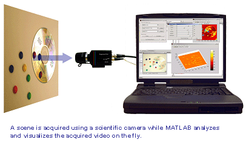

| Image Acquisition
Application Demos |
These demos highlight some of the applications
using the Image Acquisition Toolbox.
Alpha Blending Streamed Image Pairs
Linearly combine images as they are acquired.
Process acquired data using basic MATLAB functions.
Alpha Blending Streamed Image Pairs **
Linearly combine images as they are acquired.
Process acquired data using the Image Processing Toolbox.
Averaging Images Over Time **
Collect image frames over time while saving image averages to
disk.
Calculating the Length of a
Pendulum in Motion **
Acquire and process images of a pendulum in motion.
Determine the pendulum's characteristics to determine its length.
Process acquired data using the Image Processing Toolbox.
Color-based Segmentation of Fabric **
Acquire and process images of a piece of fabric's color pattern.
Segment the pattern by color using the Image Processing Toolbox.
Determining the Rate of
Acquisition
Using the time stamps for acquired data, approximate the rate
of acquisition.
Laser Tracking **
Acquire and process images of a laser pointer.
Determine the laser pointer coordinates within a MATLAB figure
window.
Process acquired data using the Image Processing Toolbox.
Logging Data at Constant
Intervals
Using video input object properties, illustrate how to
acquire data at a constant interval.
** Indicates the Image Processing Toolbox is required to run
the demo.
